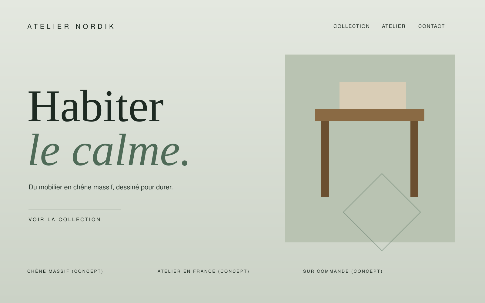

01 · WEB DESIGN
Votre site mérite une nouvelle dimension.
Création et refonte de sites web pensés pour valoriser votre marque, clarifier votre offre et offrir une expérience utilisateur soignée.
- Création de sites web
- Refonte de sites existants
- Design de landing pages
- Modernisation de l'expérience utilisateur
- Intégration de contenus et de fonctionnalités adaptées au projet